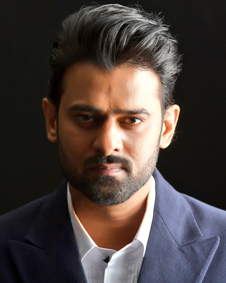

Prabhas
UA 2023.18 2h 55m Action, Crime, Drama
The fate of a violently contested kingdom hangs on the fraught bond between two friends-turned-foes in this saga of power, bloodshed and betrayal.
Ceasefire, directed by Prashanth Neel, unfolds in the rustic and politically charged landscape of Khansar. This action-packed film, featuring Prabhas as Deva and Prithviraj Sukumaran as Vardharaja, is set against a backdrop of intrigue and rebellion, relying heavily on drama as well as swag and action. Prashanth has meticulously created the dystopian city of Khansar with intricate details, establishing a multitude of characters with a narrative spanning between 1747 and the present times. Reminiscent of Black Panther, the empire boasts 101 tribes with distinct characteristics, divided into three divisions, including Kaparlu (clan leaders) and Doralu (council members).
A man of few words, Prabhas packs a punch with his dialogues and looks slick in action sequences, making the film a feast for his ardent fans. Prashanth leaves no opportunity to elevate the character of Deva aka Salaar, masterfully making his protagonist appear larger than life. The screenplay takes its own sweet time in the first half to establish the character of Deva, creating a slow burn and preparing audiences for what is to come.
Prashanth Neel takes an unconventional route in narrating this dystopian world and its characters, leaning more towards international cinema. Much like the KGF franchise, the director adheres to a dark colour palette. The film eschews typical dance numbers or romantic melodies, instead relying on situational anthems sung by school children in the first half and by children from the Mahara tribe in the second half, which enhance the drama. The film explores themes of power, loyalty, betrayal, and the right to leadership, delving into the complexities of political machinations and personal allegiances, offering a compelling commentary on power struggles.
Prabhas, as Deva, is both electrifying and docile, delivering a performance that combines raw power with deep emotional depth. His portrayal of Salaar showcases his ability to balance raw aggression with subtle emotional nuances. Prithviraj Sukumaran, as Vardha, portrays the vulnerability and determination of a young heir caught in a political whirlwind, yet harboring his own strategic calculations. His compelling performance adds a layer of complexity to the narrative. As the film progresses, Prithviraj’s character exudes strength and valour. Shruti Haasan, in her role as Aadhya, brings a sense of balance but is mostly limited to the first half and a few scenes in the second.
Jagapathi Babu, as Raja Mannar, delivers a commanding performance, while Bobby Simha, Tinnu Anand, Easwari Rao, and others contribute significantly to the story's depth. The supporting cast, including Sriya Reddy, Ramachandra Raju, Madhu Guruswamy, John Vijay, Saptagiri, Prudhvi Raj, Jhansi and Mime Gopi, adds layers to the narrative.
The cinematography captures the essence of Khansar's tumultuous atmosphere, immersing the audience in the city's tension and drama. Ravi Basrur’s soundtrack adds a robust layer to the film's atmosphere, complementing the tone and heightening the emotional impact of certain scenes. The editing is sharp in the second half, though it cannot be said the same for the first. The special effects are effective, contributing significantly to the film's visual appeal.
The film does feature a certain amount of violence and bloodshed, which may not be palatable for certain sections of the audience. The first half is layered, focusing on the drama and sense of tension in the air. Audiences expecting a lot of action, comedy, and masala might be disappointed. However, it does score high on drama and action, with a bit of humour created through the delivery of dialogues or the body language of certain characters.
Ceasefire combines political drama with high-stakes action and champions brotherhood. It is a riveting watch for those with a taste for grand and epic narratives. Fans of Prabhas and Prithviraj Sukumaran will find much to admire in this intense and captivating film. It's a film that will entertain and impress with its scale, but might require some patience in the initial stages, mostly establishing the world of Khansar and its inhabitants and setting the stage for Salaar